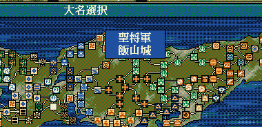
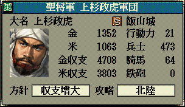

string カスタム::On_家名表示直前(int 武将番号, string 家名) {
return "";
}


string カスタム::On_家名表示直前(int 武将番号, string 家名) {
int iBushouID = 武将番号 - 1;
if (0 <= iBushouID && iBushouID < 最大数::武将情報::配列数) {
// 名字(姓)が求められている武将(原則的には大名)が、長尾景虎ならば
// ( =今表示しようとしている武将が長尾景虎に帰属しているならば )
if(p武将戸籍情報[iBushouID].顔番号 == 顔番号::長尾景虎) {
return "聖将軍";
}
}
// 変更しない場合""
return "";
}